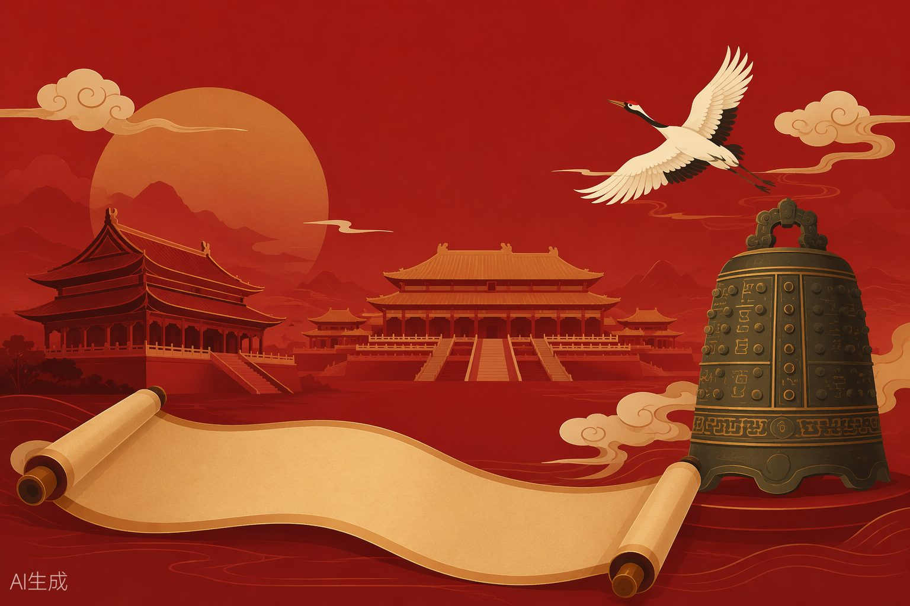

框架，汉朝继承并完善，奠定了中国古代政治制度的基础。
◦ 经济：盐铁官营、均输平准、统一铸币（五铢钱）
◦ 军事：卫青、霍去病北击匈奴；张骞通西域，开辟丝绸之路
• 后期外戚与宦官交替专权，导致东汉衰落
• 184年黄巾起义，东汉名存实亡
| 方面秦朝汉朝 | ||
|---|---|---|
| 地方制度郡县制郡国并行→推恩令后加强中央集权 | ||
| 治国思想法家思想，严刑峻法汉初道家无为→汉武帝后独尊儒术 | ||
| 民族关系北击匈奴、南征百越北击匈奴、通西域、和亲政策 | ||
| 灭亡原因暴政、赋役繁重外戚宦官专权、土地兼并、黄巾起义 | ||
| 典例破题2 | ||
| 【例题1】选择题秦始皇在全国范围内推行郡县制，郡守和县令的产生方式是（ ）•世袭继承A.•考试选拔B.•皇帝任命C.•地方推举D. | ||
| 解析：郡县制下，郡守和县令都由皇帝直接任免，不得世袭，这是郡县制与分封制的根本区别。考试选拔是科举制（隋朝开始）；地方推举是察举制（汉朝）。故选C。 | ||
| 【例题2】材料分析题 | ||
| "今诸侯或连城数十，地方千里，缓则骄奢易为淫乱，急则阻其强而合从以逆京师……愿陛下令诸侯得推恩分子弟，以地侯之。彼人人喜得所愿，上以德施，实分其国，不削而稍弱矣。" |
——《史记·平津侯主父列传》
（1）材料反映了什么问题？主父偃提出了什么建议？（4分）（2）该建议起到了什么作用？体现了汉武帝怎样的治国策略？（6分）
分）策略：以柔克刚、分化瓦解，用和平手段解决王国问题，避免流血冲突。
（3分）
秦朝统一后，在全国范围内推行的标准文字是（ ）
| 答案：C。秦始皇统一文字，以秦国的小篆为标准字体，后隶书逐渐流行。 | |||||
|---|---|---|---|---|---|
| 练习2汉武帝"罢黜百家，独尊儒术"的实质是（ ）消灭其他学派的思想AA. |
| 以儒家思想作为封建正统思想BB.让儒家学者都去做官CC.彻底否定法家和道家的作用DD. | |||||
|---|---|---|---|---|---|
| 答案：B。"独尊儒术"是将儒学确立为官方正统思想，为封建统治服务，但不是消灭其他学派。 | |||||
| 练习3下列关于丝绸之路的表述，不正确的是（ ）张骞通西域为丝绸之路开辟奠定了基础AA.丝绸之路从长安出发，经河西走廊到达欧洲BB.丝绸之路促进了中国与中亚、西亚、欧洲的经济文化交流CC.丝绸之路在东汉时期才开通DD. | |||||
| 答案：D。丝绸之路在西汉汉武帝时期就已开通（张骞通西域后），不是东汉。 |
秦朝灭亡和隋朝灭亡的相似原因主要是（ ）
| 答案：B。秦朝和隋朝都是二世而亡，主要原因是暴政、大兴土木（长城/大运河）、赋役繁重，引发农民起义。 | ||||
|---|---|---|---|---|
| 4 | 易错警示 |
袭统治。郡县制是官僚政治，分封制是贵族政治。
诗书和诸子百家著作（医药、卜筮、种树之书除外），不是全部书籍。
辖，变相削弱诸侯势力。
在政治实践中发挥作用。
形成是一个渐进过程，不是张骞"开辟"了一条路，而是促进了中西交通。